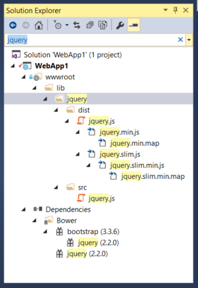

Migrating From ASP.NET MVC to ASP.NET Core MVC¶
By Rick Anderson, Daniel Roth, Steve Smith and Scott Addie
This article shows how to get started migrating an ASP.NET MVC project to ASP.NET Core MVC. In the process, it highlights many of the things that have changed from ASP.NET MVC. Migrating from ASP.NET MVC is a multiple step process and this article covers the initial setup, basic controllers and views, static content, and client-side dependencies. Additional articles cover migrating configuration and identity code found in many ASP.NET MVC projects.
Sections:
Create the starter ASP.NET MVC project¶
To demonstrate the upgrade, we’ll start by creating a ASP.NET MVC app. Create it with the name WebApp1 so the namespace will match the ASP.NET Core project we create in the next step.


Optional: Change the name of the Solution from WebApp1 to Mvc5. Visual Studio will display the new solution name (Mvc5), which will make it easier to tell this project from the next project.
Create the ASP.NET Core project¶
Create a new empty ASP.NET Core web app with the same name as the previous project (WebApp1) so the namespaces in the two projects match. Having the same namespace makes it easier to copy code between the two projects. You’ll have to create this project in a different directory than the previous project to use the same name.

- Optional: Create a new ASP.NET Core app named WebApp1 with authentication set to Individual User Accounts. Rename this app FullAspNetCore. Creating this project will save you time in the conversion. You can look at the template generated code to see the end result or to copy code to the conversion project. It’s also helpful when you get stuck on a conversion step to compare with the template generated project.
Configure the site to use MVC¶
Open the project.json file.
- Add
Microsoft.AspNetCore.MvcandMicrosoft.AspNetCore.StaticFilesto thedependenciesproperty: - Add the “prepublish” line to the “scripts” section:
{
"dependencies": {
"Microsoft.NETCore.App": {
"version": "1.0.0-rc2-3002702",
"type": "platform"
},
"Microsoft.AspNetCore.Mvc": "1.0.0-rc2-final",
"Microsoft.AspNetCore.StaticFiles": "1.0.0-rc2-final",
"Microsoft.AspNetCore.Server.IISIntegration": "1.0.0-rc2-final",
"Microsoft.AspNetCore.Server.Kestrel": "1.0.0-rc2-final"
},
"tools": {
"Microsoft.AspNetCore.Server.IISIntegration.Tools": {
"version": "1.0.0-preview1-final",
"imports": "portable-net45+win8+dnxcore50"
}
},
"frameworks": {
"netcoreapp1.0": {
"imports": [
"dotnet5.6",
"dnxcore50",
"portable-net45+win8"
]
}
},
"buildOptions": {
"emitEntryPoint": true,
"preserveCompilationContext": true
},
"runtimeOptions": {
"configProperties": {
"System.GC.Server": true
}
},
"publishOptions": {
"include": [
"wwwroot",
"web.config"
]
},
"scripts": {
"prepublish": [ "npm install", "bower install", "gulp clean", "gulp min" ],
"postpublish": [ "dotnet publish-iis --publish-folder %publish:OutputPath% --framework %publish:FullTargetFramework%" ]
}
}
Microsoft.AspNetCore.MvcInstalls in the ASP.NET Core MVC framework packageMicrosoft.AspNetCore.StaticFilesis the static file handler. The ASP.NET runtime is modular, and you must explicitly opt in to serve static files (see Working with Static Files).- The “scripts”/”prepublish” line is needed for Gulp, Bower and NPM. We’ll talk about that later.
- Open the Startup.cs file and change the code to match the following:
public class Startup
{
// This method gets called by the runtime. Use this method to add services to the container.
// For more information on how to configure your application, visit http://go.microsoft.com/fwlink/?LinkID=398940
public void ConfigureServices(IServiceCollection services)
{
services.AddMvc();
}
// This method gets called by the runtime. Use this method to configure the HTTP request pipeline.
public void Configure(IApplicationBuilder app)
{
app.UseStaticFiles();
app.UseMvc(routes =>
{
routes.MapRoute(
name: "default",
template: "{controller=Home}/{action=Index}/{id?}");
});
}
}
UseStaticFiles adds the static file handler. As mentioned previously, the ASP.NET runtime is modular, and you must explicitly opt in to serve static files. app.UseMvc(routes => adds routing. For more information, see Application Startup and Routing.
Add a controller and view¶
In this section, you’ll add a minimal controller and view to serve as placeholders for the ASP.NET MVC controller and views you’ll migrate in the next section.
- Add a Controllers folder.
- Add an MVC controller class with the name HomeController.cs to the Controllers folder.

- Add a Views folder.
- Add a Views/Home folder.
- Add an Index.cshtml MVC view page to the Views/Home folder.

The project structure is shown below:

Replace the contents of the Views/Home/Index.cshtml file with the following:
<h1>Hello world!</h1>
Run the app.
See Controllers and Views for more information.
Now that we have a minimal working ASP.NET Core project, we can start migrating functionality from the ASP.NET MVC project. We will need to move the following:
- client-side content (CSS, fonts, and scripts)
- controllers
- views
- models
- bundling
- filters
- Log in/out, identity (This will be done in the next tutorial.)
Controllers and views¶
- Copy each of the methods from the ASP.NET MVC
HomeControllerto the newHomeController. Note that in ASP.NET MVC, the built-in template’s controller action method return type is ActionResult; in ASP.NET Core MVC the actions return IActionResult instead.ActionResultimplementsIActionResult, so there is no need to change the return type of your action methods. - Copy the About.cshtml, Contact.cshtml, and Index.cshtml Razor view files from the ASP.NET MVC project to the ASP.NET Core project.
- Run the ASP.NET Core app and test each method. We haven’t migrated the layout file or styles yet, so the rendered views will only contain the content in the view files. You won’t have the layout file generated links for the
AboutandContactviews, so you’ll have to invoke them from the browser (replace 2468 with the port number used in your project).- http://localhost:2468/home/about
- http://localhost:2468/home/contact

Note the lack of styling and menu items. We’ll fix that in the next section.
Static content¶
In previous versions of ASP.NET MVC, static content was hosted from the root of the web project and was intermixed with server-side files. In ASP.NET Core, static content is hosted in the wwwroot folder. You’ll want to copy the static content from your old ASP.NET MVC app to the wwwroot folder in your ASP.NET Core project. In this sample conversion:
- Copy the favicon.ico file from the old MVC project to the wwwroot folder in the ASP.NET Core project.
The old ASP.NET MVC project uses Bootstrap for its styling and stores the Bootstrap files in the Content and Scripts folders. The template-generated old ASP.NET MVC project references Bootstrap in the layout file (Views/Shared/_Layout.cshtml). You could copy the bootstrap.js and bootstrap.css files from the ASP.NET MVC project to the wwwroot folder in the new project, but that approach doesn’t use the improved mechanism for managing client-side dependencies in ASP.NET Core.
In the new project, we’ll add support for Bootstrap (and other client-side libraries) using Bower:
- Add a Bower configuration file named bower.json to the project root (Right-click on the project, and then Add > New Item > Bower Configuration File). Add Bootstrap and jQuery to the file (see the highlighted lines below).
{
"name": "asp.net",
"private": true,
"dependencies": {
"bootstrap": "3.3.6",
"jquery": "2.2.0"
}
}
Upon saving the file, Bower will automatically download the dependencies to the wwwroot/lib folder. You can use the Search Solution Explorer box to find the path of the assets.
Note
bower.json is not visible in Solution Explorer. You can display the hidden .json files by selecting the project in Solution Explorer and then tapping the Show All Files icon. You won’t see Show All Files unless the project is selected.
See Manage Client-Side Packages with Bower for more information.
Gulp¶
When you create a new web app using the ASP.NET Core Web Application template, the project is setup to use Gulp. Gulp is a streaming build system for client-side code (HTML, LESS, SASS, etc.). The gulpfile.js contains JavaScript that defines a set of gulp tasks that you can set to run automatically on build events or you can run manually using Task Runner Explorer. In this section we’ll show how to use gulpfile.js to bundle and minify the projects JavaScript and CSS files.
If you created the optional FullAspNetCore project (a new ASP.NET Core web app with Individual User Accounts), add gulpfile.js from that project to the project we are updating. In Solution Explorer, right-click the web app project and choose Add > Existing Item.
Navigate to gulpfile.js from the new ASP.NET Core web app with Individual User Accounts and add the add gulpfile.js file. Alternatively, right-click the web app project and choose Add > New Item. Select Gulp Configuration File, and name the file gulpfile.js. The gulpfile.js file:
/// <binding Clean='clean' />
"use strict";
var gulp = require("gulp"),
rimraf = require("rimraf"),
concat = require("gulp-concat"),
cssmin = require("gulp-cssmin"),
uglify = require("gulp-uglify");
var webroot = "./wwwroot/";
var paths = {
js: webroot + "js/**/*.js",
minJs: webroot + "js/**/*.min.js",
css: webroot + "css/**/*.css",
minCss: webroot + "css/**/*.min.css",
concatJsDest: webroot + "js/site.min.js",
concatCssDest: webroot + "css/site.min.css"
};
gulp.task("clean:js", function (cb) {
rimraf(paths.concatJsDest, cb);
});
gulp.task("clean:css", function (cb) {
rimraf(paths.concatCssDest, cb);
});
gulp.task("clean", ["clean:js", "clean:css"]);
gulp.task("min:js", function () {
return gulp.src([paths.js, "!" + paths.minJs], { base: "." })
.pipe(concat(paths.concatJsDest))
.pipe(uglify())
.pipe(gulp.dest("."));
});
gulp.task("min:css", function () {
return gulp.src([paths.css, "!" + paths.minCss])
.pipe(concat(paths.concatCssDest))
.pipe(cssmin())
.pipe(gulp.dest("."));
});
gulp.task("min", ["min:js", "min:css"]);
The code above performs these functions:
- Cleans (deletes) the target files.
- Minifies the JavaScript and CSS files.
- Bundles (concatenates) the JavaScript and CSS files.
See Using Gulp.
NPM¶
NPM (Node Package Manager) is a package manager which is used to acquire tooling such as Bower and Gulp; and, it is fully supported in Visual Studio. We’ll use NPM to manage Gulp dependencies.
If you created the optional FullAspNetCore project, add the package.json NPM file from that project to the project we are updating. The package.json NPM file lists the dependencies for the client-side build processes defined in gulpfile.js.
Note
package.json is not visible in Solution Explorer.
Right-click the web app project, choose Add > Existing Item, and add the package.json NPM file. Alternatively, you can add a new NPM configuration file as follows:
- In Solution Explorer, right-click the project
- Select Add > New Item
- Select NPM Configuration File
- Leave the default name: package.json
- Tap Add
The package.json file:
{
"name": "asp.net",
"version": "0.0.0",
"private": true,
"devDependencies": {
"gulp": "3.8.11",
"gulp-concat": "2.5.2",
"gulp-cssmin": "0.1.7",
"gulp-uglify": "1.2.0",
"rimraf": "2.2.8"
}
}
Right-click on gulpfile.js and select Task Runner Explorer. Double-click on a task to run it.
For more information, see Client-Side Development.
Migrate the layout file¶
- Copy the _ViewStart.cshtml file from the old ASP.NET MVC project’s Views folder into the ASP.NET Core project’s Views folder. The _ViewStart.cshtml file has not changed in ASP.NET Core MVC.
- Create a Views/Shared folder.
- Optional: Copy _ViewImports.cshtml from the old MVC project’s Views folder into the ASP.NET Core project’s Views folder. Remove any namespace declaration in the _ViewImports.cshtml file. The _ViewImports.cshtml file provides namespaces for all the view files and brings in doc:Tag Helpers </mvc/views/tag-helpers/index>. Tag Helpers are used in the new layout file. The _ViewImports.cshtml file is new for ASP.NET Core
- Copy the _Layout.cshtml file from the old ASP.NET MVC project’s Views/Shared folder into the ASP.NET Core project’s Views/Shared folder.
Open _Layout.cshtml file and make the following changes (the completed code is shown below):
- Replace @Styles.Render(“~/Content/css”) with a <link> element to load bootstrap.css (see below)
- Remove @Scripts.Render(“~/bundles/modernizr”)
- Comment out the @Html.Partial(“_LoginPartial”) line (surround the line with @*...*@) - we’ll return to it in a future tutorial
- Replace @Scripts.Render(“~/bundles/jquery”) with a <script> element (see below)
- Replace @Scripts.Render(“~/bundles/bootstrap”) with a <script> element (see below)
The replacement CSS link:
<link rel="stylesheet" href="~/lib/bootstrap/dist/css/bootstrap.css" />
The replacement script tags:
<script src="~/lib/jquery/dist/jquery.js"></script>
<script src="~/lib/bootstrap/dist/js/bootstrap.js"></script>
The updated _Layout.cshtml file is shown below:
<!DOCTYPE html>
<html>
<head>
<meta charset="utf-8" />
<meta name="viewport" content="width=device-width, initial-scale=1.0">
<title>@ViewBag.Title - My ASP.NET Application</title>
<link rel="stylesheet" href="~/lib/bootstrap/dist/css/bootstrap.css" />
</head>
<body>
<div class="navbar navbar-inverse navbar-fixed-top">
<div class="container">
<div class="navbar-header">
<button type="button" class="navbar-toggle" data-toggle="collapse" data-target=".navbar-collapse">
<span class="icon-bar"></span>
<span class="icon-bar"></span>
<span class="icon-bar"></span>
</button>
@Html.ActionLink("Application name", "Index", "Home", new { area = "" }, new { @class = "navbar-brand" })
</div>
<div class="navbar-collapse collapse">
<ul class="nav navbar-nav">
<li>@Html.ActionLink("Home", "Index", "Home")</li>
<li>@Html.ActionLink("About", "About", "Home")</li>
<li>@Html.ActionLink("Contact", "Contact", "Home")</li>
</ul>
@*@Html.Partial("_LoginPartial")*@
</div>
</div>
</div>
<div class="container body-content">
@RenderBody()
<hr />
<footer>
<p>© @DateTime.Now.Year - My ASP.NET Application</p>
</footer>
</div>
<script src="~/lib/jquery/dist/jquery.js"></script>
<script src="~/lib/bootstrap/dist/js/bootstrap.js"></script>
@RenderSection("scripts", required: false)
</body>
</html>
View the site in the browser. It should now load correctly, with the expected styles in place.
- Optional: You might want to try using the new layout file. For this project you can copy the layout file from the FullAspNetCore project. The new layout file uses Tag Helpers and has other improvements.
Configure Bundling¶
The ASP.NET MVC starter web template utilized the ASP.NET Web Optimization for bundling. In ASP.NET Core, this functionality is performed as part of the build process using Gulp. We’ve previously configured bundling and minification; all that’s left is to change the references to Bootstrap, jQuery and other assets to use the bundled and minified versions. You can see how this is done in the layout file (Views/Shared/_Layout.cshtml) of the full template project. See Bundling and Minification for more information.
Solving HTTP 500 errors¶
There are many problems that can cause a HTTP 500 error message that contain no information on the source of the problem. For example, if the Views/_ViewImports.cshtml file contains a namespace that doesn’t exist in your project, you’ll get a HTTP 500 error. To get a detailed error message, add the following code:
public void Configure(IApplicationBuilder app, IHostingEnvironment env, ILoggerFactory loggerFactory)
{
if (env.IsDevelopment())
{
app.UseDeveloperExceptionPage();
}
app.UseStaticFiles();
app.UseMvc(routes =>
{
routes.MapRoute(
name: "default",
template: "{controller=Home}/{action=Index}/{id?}");
});
}
See Using the Developer Exception Page in Error Handling for more information.